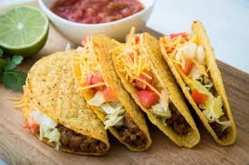

About LTS
LTS was fonded in . Our shop was built from a love of tacos🌮🌮🌮.We hope our shop adds a unique and interesting place to our little town.

LTS was fonded in . Our shop was built from a love of tacos🌮🌮🌮.We hope our shop adds a unique and interesting place to our little town.